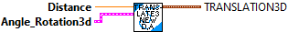
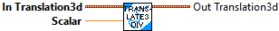
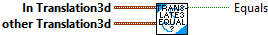
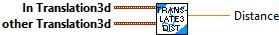
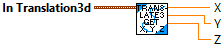
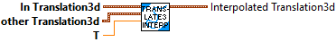
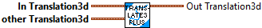
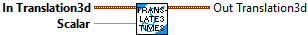
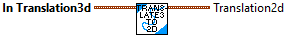
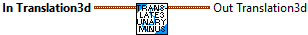

Constructs a Translation3d with the X, Y, and Z components equal to the provided values.
Parameters:
- X - The x component of the translation.
- Y - The y component of the translation.
- Z - The z component of the translation.
Returns
- TRANSLATION3D - The TRANSLATION3D data structure

Constructs a Translation3d with X, Y, and Z components equal to zero.
Parameters:
-- None --
Returns
- TRANSLATION3D - The TRANSLATION3D data structure

Constructs a Translation3d with the provided distance and angle. This is essentially converting from polar coordinates to Cartesian coordinates.
Parameters:
- Dist - Distance.
- Ang - Rotation3d representing the angle.
Returns
- TRANSLATION3d - The TRANSLATION3d data structure

Returns the translation divided by a scalar.
For example, Translation3d(2.0, 2.5, 4.5) / 2 = Translation3d(1.0, 1.25, 2.25).
Parameters:
- In Translation3d - This translation3d data structure
- scalar - The value to divide the translation by
Result:
- Out Translation3d - The resulting translation

Checks equality between this Translation3d and another object.
Parameters:
- IN TRANSLATION3d - This TRANSLATION3d data structure
- OTHER TRANSLATION3d - The other TRANSLATION3d data structure
Returns:
- EQUALS - Value is set to TRUE if the two TRANSLATIONS are equal.

Calculates the distance between two translations in 3D space.
The distance between translations is defined as v((x2-x1)²+(y2-y1)²+(z2-z1)²).
Parameters:
- IN TRANSLATION3d - This TRANSLATION3d data structure
- OTHER TRANSLATION3d - The translation3d to compute the distance to.
Returns:
- Distance - The distance between the two translations.

Returns the norm, or distance from the origin to the translation3d.
Parameters:
- IN TRANSLATION3D - This translation3d data structure
Returns:
- Norm - The norm of the translation.

Returns the X, Y and Zcomponents of the translation.
Parameters
- IN Translation3d - This Translation3d data structure
Returns:
- X- The X component of the translation.
- Y- The Y component of the translation.
- Z- The Z component of the translation.

Inerpolate between this and an End Value translation3d
Parameters:
- IN Translation3d - This translation3d data structure
- EndValue Translation3d - The translation3d data structure
- T -- The fraction, between 0 and 1 to interpolate between the two translations.
Returns
- Interpolated Translation3d - The interpolated translation.

Returns the difference between two translations.
For example, Translation3d(5.0, 4.0, 3.0) - Translation3d(1.0, 2.0, 3.0) = Translation3d(4.0, 2.0, 0.0).
Parameters:
- IN Translation3d - This translation3d data structure
- other Translation3d - The translation3d data structure to subtract
Returns
- Out Translation3d - The difference between the two translations.

Adds two translations in 3d space and returns the sum.
For example, Translation3d(1.0, 2.5, 3.5) + Translation3d(2.0, 5.5, 7.5) = Translation3d{3.0, 8.0, 11.0).
Parameters:
- IN Translation3d - This translation3d data structure
- other Translation3d - The translation3d data structure to add
Returns
- Out Translation3d - The summation of the two translations.

Applies a rotation to the translation in 3D space.
For example, rotating a Translation3d of <2, 0, 0> by 90 degrees around the Z axis will return a Translation3d of <0, 2, 0>.
Parameters:
- in Trandlation3d -- Translation3d data structure
- Other Rotation3d -- The rotation to rotate the translation by.
Returns
- TRANSLATION3D - The TRANSLATION3D data structure

Returns the translation multiplied by a scalar.
For example, Translation3d(2.0, 2.5, 4.5) * 2 = Translation3d(4.0, 5.0, 9.0).
Parameters:
- In Translation3d - This translation3d data structure
- scalar - The value to multiply the translation by
Result:
- Out Translation 3d - The resulting translation

Returns a Translation2d representing this Translation3d projected into the X-Y plane.
Parameters
- IN Translation3d - This Translation3d data structure
Returns:
- out Translation2d -- A Translation2d representing this Translation3d projected into the X-Y

Returns the inverse of the current translation. This is equivalent to negating all components of the translation.
Parameters:
- In Translation3d - This translation3d data structure
Result:
- Out Translation3d - The inverse of the current translation.